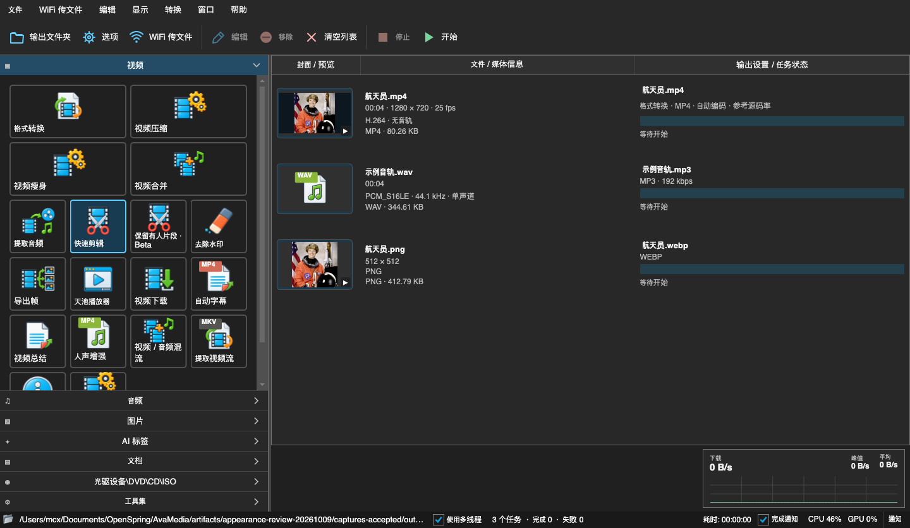

Convert & compress
Convert between video, audio and image formats. Compress by quality, bitrate or target size. Merge, mux, extract tracks and repair containers.
AVAMEDIA — LOCAL MEDIA TOOLBOX
Video, audio, images and PDF in a single toolbox. Every long task is split into visible stages that you can pause or retry from any step. Four skins: Light, Dark, Mac OS 9 and Windows XP.
Windows x64 · macOS Apple Silicon · Lifetime license, no subscription · Files stay on your machine
PHOTO · USGS / Kīlauea, 2018 · PUBLIC DOMAIN
01 / Multi-stage task window
Keep-people clips, auto subtitles, video summaries, batch rotation, auto tagging and media organizing all share one multi-stage task window.
02 / Skins · for retro fans
Mac OS 9 Platinum and Windows XP Luna come with their own windows, buttons, title bars and pixel fonts. Switching is instant and every feature stays the same.

Dark: dark gray with blue accents, comfortable for long sessions.
Screenshots show the Chinese interface. The app UI is currently in Chinese.
03 / Features
Convert between video, audio and image formats. Compress by quality, bitrate or target size. Merge, mux, extract tracks and repair containers.
Multi-segment cutting, crop, rotate, mirror, speed, fades and logo removal, with fast stream-copy export in the original format.
Local speech recognition. Proofread, then export subtitle files or burn them into the video. Voice enhancement is available on its own.
Local or online models analyze picture and speech in segments and write a chaptered report. Online requests are clearly flagged.
Tag images and videos, group them by tag, meaning, person or duration, then copy or move with undo.
Detect the spans where people appear, review them, and export in the original format or re-encoded.
Playlists, track selection, subtitles and VR video. The viewer opens HEIC and browses images inside archives.
Pick, reorder and rotate pages visually. Merge, split, extract text, convert images or TXT to PDF, compress and age.
Video download, LAN Wi-Fi file transfer, batch rename and contact sheets, DVD / VOB and disc-to-ISO.
Some AI features need local models installed on demand. Recognition and classification results are not guaranteed to be fully accurate. See the in-app help for details.
04 / Pricing
Pay once, use forever. No subscription, no monthly fee.
Until checkout opens, leave a note in the feedback area and we will tell you when it goes live.
PHOTO · USGS / Kīlauea, 2018 · PUBLIC DOMAIN
05 / Feedback
We collect feedback and publish every release in a public repository.